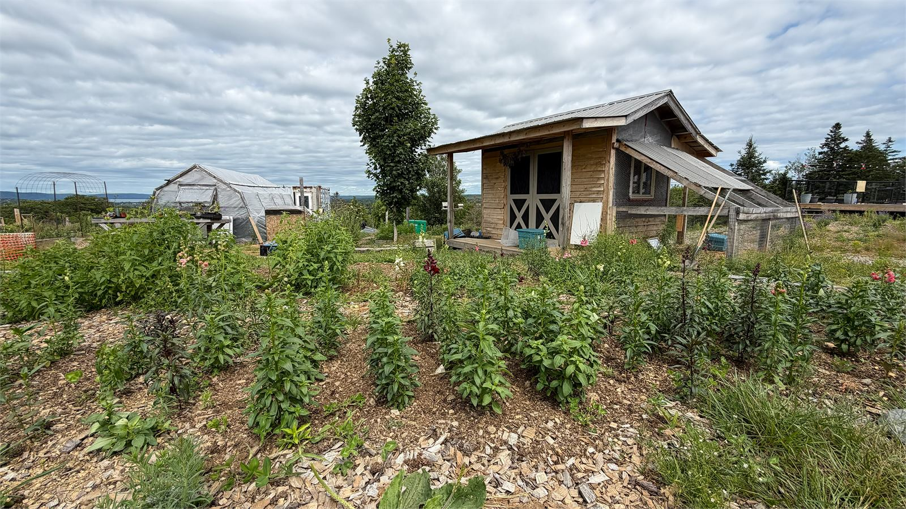
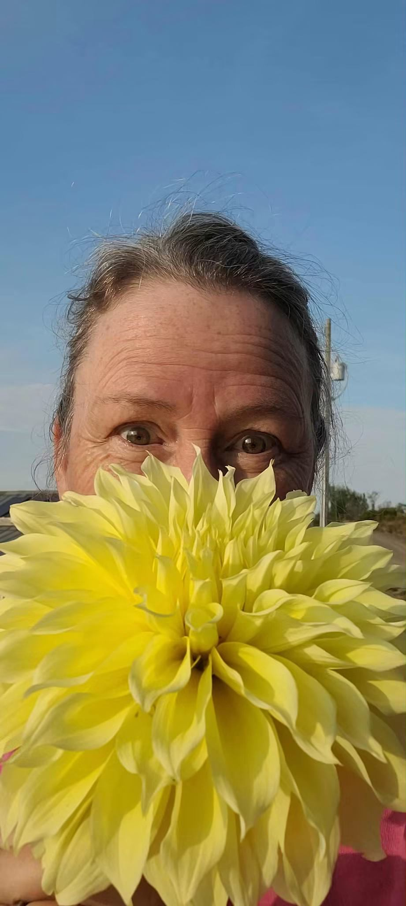
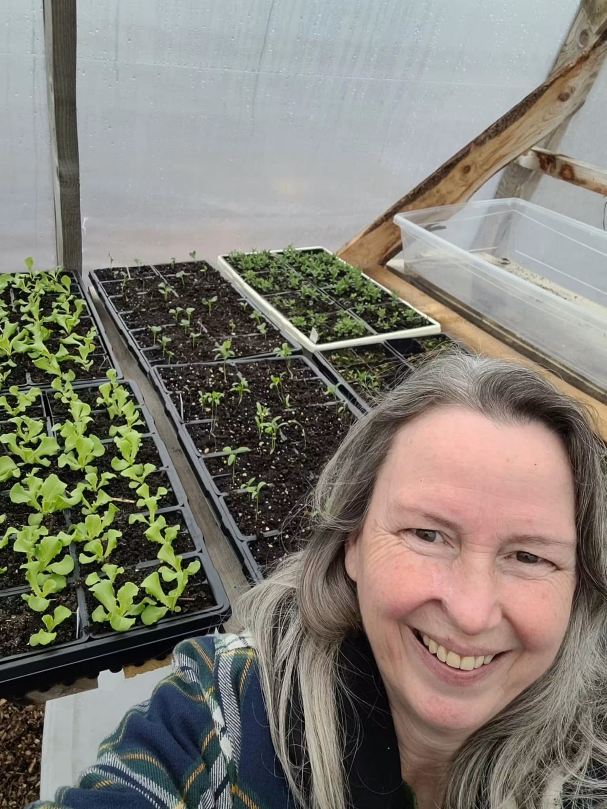
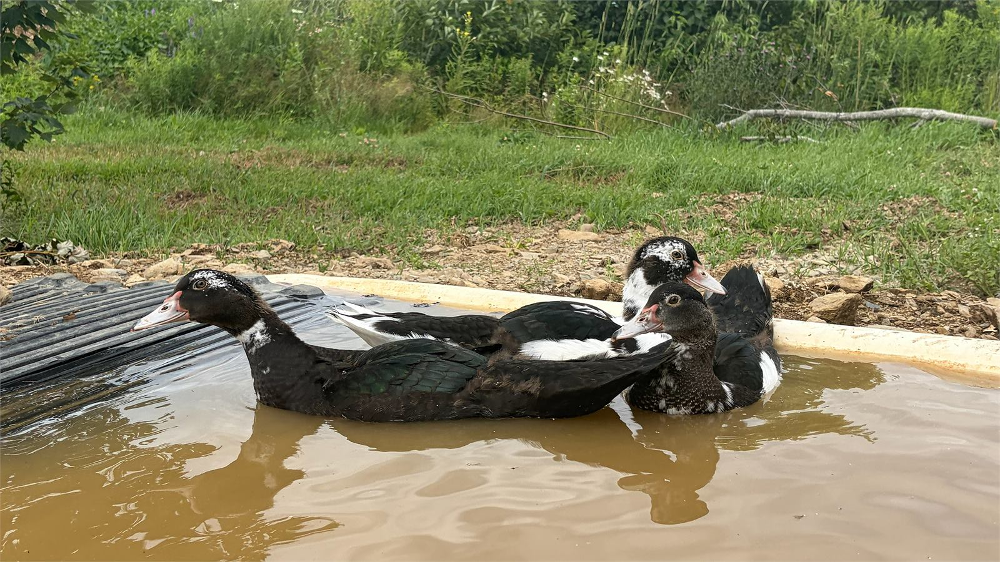

To hear the Earth sing
The story of a small farm on a hill in Marshalltown, and the people who look after it.
Tenalach
Tenalach is an Irish word for the relationship a person has with the land, the air and the water around them. It is usually translated as to hear the Earth sing.
It is a big name for a small farm, but it fits. Stand at the top of the hill early on a summer morning, with the beds full and the basin catching the light below, and you will understand why it stuck.
Everything we do here comes back to that idea. We grow without chemical sprays because the soil has to keep working long after we are done with it. We sell close to home because a flower that travels a few hundred metres is a better flower than one that has been on a plane. And we open the gate to anyone who wants to see how it all works, because a farm nobody visits is only half a farm.


Cheryl Antoski
Cheryl is the one with soil under her fingernails and a plan for every tray in the greenhouse. She grows the seedlings, plants the beds, cuts the flowers, ties the bouquets and runs the workshops, usually all in the same week.
She is also the person to ask if you are not sure what will do well in your garden. Bring her a photo of the spot, tell her how much sun it gets, and she will point you at something that has a good chance. She would far rather send you home with the right plant than the expensive one.
Her husband Bill works alongside her on everything the farm needs, from building and fixing to hauling and setting up at markets. Between the two of them the place runs, and if you visit you will very likely meet them both.
Ducks, and a dog called Copper
The farm is not a petting zoo, but there is usually somebody to say hello to.

The ducks
Our ducks have the run of the place and firm opinions about where they should be at any given moment. They are excellent company, reasonably good at pest control, and always the first thing children want to see.
Copper
Copper is the farm dog and the unofficial welcoming committee. He is friendly, curious, and quite likely to accompany you on a walk down the lane whether you asked him to or not. One of the cabins is named after him.
A look around the place
Tap any photo to see it larger.

We take the farm on the road
Through the season we pack the van and set up at markets around the area. It is a good chance to catch us if the drive out to Marshalltown does not suit, and a good chance for us to hear what people are actually looking for.
The stall usually has seedlings, fresh bouquets and herbs, though what makes it onto the table depends entirely on what is ready that week.
Market dates change from season to season, so we post where we will be on Facebook before each one.
Come and have a look
We love showing people around. If you would like to visit, send us a message and we will let you know a good time to come up.